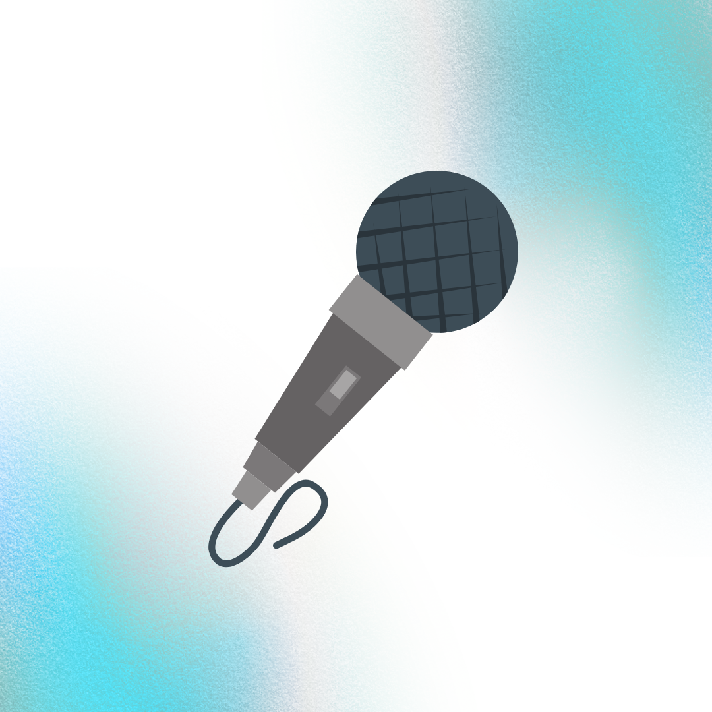

Entrevistas
A trajetória dos educadores e docentes da FATEC revela histórias inspiradoras de transformação. Cada relato nos convida a refletir sobre o impacto profundo e duradouro que um professor pode exercer na jornada de um estudante — especialmente quando existe uma rede de apoio sólida, da qual os educadores da FATEC são parte essencial e ativa.
Saiba +